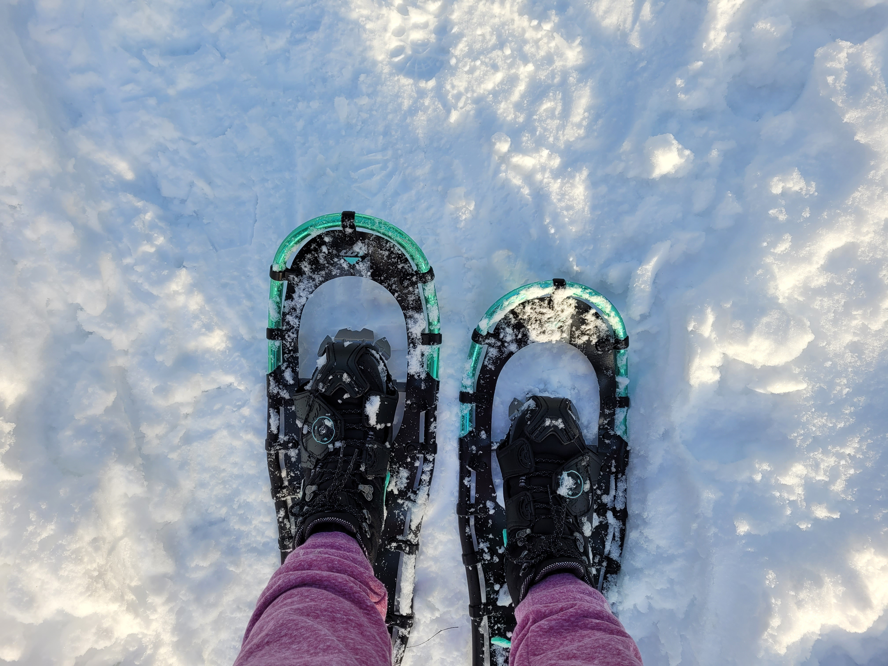
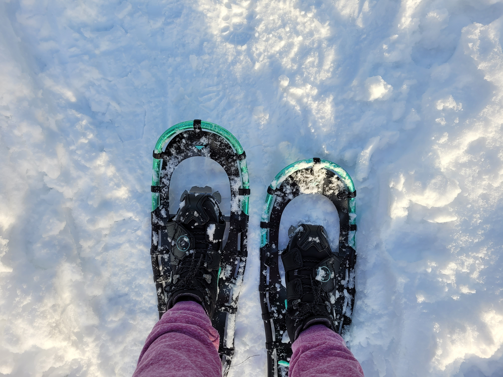

En tant que passionnée de fitness, ayant quelques certificats dans divers champs de la naturopathie, j'ai voulue créée quelque chose d'unique-Un endroit où je pouvais combiner le tout: que ce soit des feuilles d'entraînement et de progression d'entraînement, de saines habitudes alimentaires, des conseils d'exercices, et même des remèdes naturels, incluant des recettes maison ainsi que des produits naturels. Étant mère monoparentale, qui a eue quelques blessures, ce n'est pas toujours facile de rester en forme et en bonne santé. Je vis toujours avec quelques séquelles majeures, mais je demeure positive que je vais regagner ma santé et ma forme. J'espère que vous trouverez mon site utile et qu'il comblera vos attentes.
As a fitness enthusiast and having a few certificates in different naturopathy fields, I wanted to create something unique, a place where I can put it all together, from training sheets, to healthy eating habbits, exercising tips, and even natural remedies, including home recipies and health products. Being a single mom, who had a few injuries, it is not easy to stay fit and healthy. I am still dealing with major injuries aftermath, but I keep positive about regaining my health and fitness state. Hope that my site will resonate with you, and that you'll find it usefull.
 
